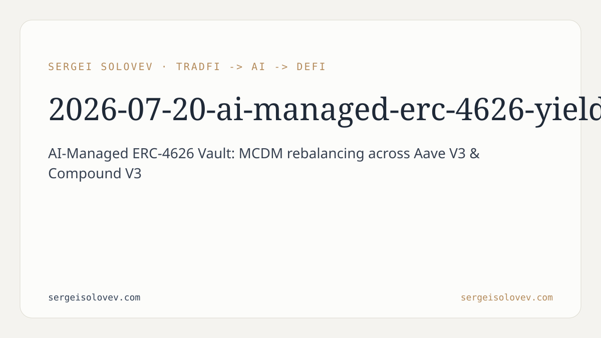

```markdown
---
title: AI-Managed ERC-4626 Yield Vault: Autonomous Rebalancing with MCDM and Formal Verification
date: 2026-07-20
slug: ai-managed-erc-4626-yield-vault
meta_description: AI agent uses MCDM to autonomously rebalance an ERC-4626 vault across Aave V3 and Compound V3. 76,800+ invariant tests, zero violations.
tags: [DeFi]
canonical_doi: 10.6084/m9.figshare.32141167
---
Yield aggregators have a design flaw that's easy to overlook until it costs you: they compare APYs. A system that ranks protocols by a single number has no mechanism to account for what that number hides — risk profile changes, gas overhead from frequent rebalances, protocol stability under stress. The implicit assumption is that the highest APY is always the right answer. It isn't, and the gap between "highest APY" and "best allocation" is where most naive yield optimizers quietly underperform or fail. This paper describes a system that treats allocation as what it actually is — a multidimensional decision — and builds the infrastructure to make that decision autonomously, verifiably, and safely.
The system is structured as a hybrid off-chain/on-chain architecture built around an ERC-4626 tokenized vault. Users deposit USDC and receive vault shares representing their proportional claim on the underlying. Accounting, deposit, and withdrawal follow the ERC-4626 standard. What departs from standard vault design is the rebalancing layer: rather than a fixed strategy encoded in a contract, an off-chain Python-based AI agent analyzes current conditions and submits signed rebalance decisions.
The split between off-chain and on-chain is deliberate. Off-chain computation has no gas constraints and can run arbitrary analysis in Python — querying protocol state, computing weighted scores, deciding when a rebalance clears the cost threshold. On-chain execution enforces the binding effect: the vault contract verifies a cryptographic signature before moving funds. Nothing executes without a valid signature from the agent key. This architecture is not novel in concept, but most yield optimizers do not implement it. They either encode strategy logic entirely on-chain — limiting computational expressiveness — or run off-chain without a verification trail, which means decisions are opaque and unauditable.
The agent evaluates each candidate protocol — Aave V3 and Compound V3 — using Multi-Criteria Decision Making with weighted scoring across four factors: yield, risk, cost-efficiency, and stability. Each factor receives an explicit weight; the protocol score is a weighted sum. The agent does not simply route to the highest APY. High gas costs reduce the cost-efficiency score; a deteriorating risk profile pulls down the risk component regardless of yield; instability in a protocol's utilization rate reduces its stability score. The final ranking reflects all four dimensions simultaneously.
Agent decisions are signed using EIP-712 typed data. EIP-712 is the Ethereum standard for structured off-chain message signing: it produces signatures that are verifiable on-chain, carry explicit schema information, and are bound to a specific chain ID and contract address, preventing cross-chain or cross-contract replay. The result is a cryptographic receipt for every rebalance: which protocol was selected, under what signed payload, from which agent key. This is accountability infrastructure. If an agent makes a bad call, you can reconstruct exactly what it decided and verify the signature against the on-chain record. That is not possible with a strategy contract that just executes logic — there is no signed artifact, only a transaction.
The system's safety properties are established through invariant testing. A test harness generates randomized sequences of function calls — deposits, withdrawals, rebalances in arbitrary order and magnitude — and checks that a set of invariants holds after every call. The reported result is 76,800+ randomized function calls with zero invariant violations. The invariants cover the core correctness properties of the vault: that share accounting is consistent, that user balances are recoverable, and that the contract behaves correctly across arbitrary interaction sequences including edge cases no manually written test would cover.
This is distinct from simulation-based validation. Invariant testing over randomized call sequences explores the contract's state space rather than a curated set of scenarios. Zero violations across 76,800+ calls is a structural guarantee, not a performance claim.
Protocol liveness is handled separately via a Chainlink Automation fallback. If the AI agent fails to submit a rebalance — downtime, network partition, key unavailability — Chainlink Automation triggers a predefined fallback path. The vault does not freeze. This is a critical operational property: autonomous agents fail, and the system should not inherit that failure.
The full system was deployed and validated on Ethereum Sepolia testnet with USDC as the underlying asset.
For DeFi builders, the EIP-712 signed decision model is a meaningful step toward deploying autonomous agents with accountability. The dominant pattern in DeFi automation today is a privileged strategy contract: grant it access, trust the logic, hope the conditions under which you audited it still hold. When they don't, failures are silent and often post-hoc inexplicable. A signed decision log changes that. Every rebalance is attributable to a specific agent output, verifiable on-chain, and auditable after the fact. This is a prerequisite for operating AI agents in higher-stakes environments — anywhere you need to explain to users, governance forums, or regulators why capital moved where it moved.
For AI and ML practitioners entering the DeFi space, the MCDM formulation is worth attention precisely because it is interpretable. Weighted scoring over explicit criteria is a linear model with readable parameters. You can inspect the weight vector, understand why one protocol ranked above another on a given day, and adjust weights when market conditions shift. A neural policy that outperforms weighted MCDM on backtests is not necessarily better for production deployment if you cannot explain its decisions to a protocol governance forum or a risk committee. Interpretability is often harder to maintain under optimization pressure than raw performance — this system treats it as a first-class design requirement. The formal verification result similarly deserves attention from systems practitioners: invariant testing with randomized call sequences is standard in smart contract development but underused in AI-adjacent systems where the temptation is to rely on simulation benchmarks instead of structural proofs.
The current system operates on Sepolia testnet with two protocols and a single asset. The testnet environment removes real economic risk, which changes calibration substantially — weight vectors derived from testnet conditions may not generalize to mainnet liquidity dynamics, where protocol utilization, gas prices, and risk parameters behave differently. Expanding beyond two protocols increases the combinatorial scope of the MCDM ranking and raises questions about weight overfitting: with more protocols, a manually specified weight vector becomes harder to justify and easier to overfit to historical data. The signed-decision architecture is sound for a single trusted operator key, but production deployment requires key rotation, agent key management, and potentially threshold signing schemes. Future work should address mainnet validation with real assets, multi-protocol generalization, and more principled weight derivation — ideally learned from on-chain data rather than specified a priori.
Code and materials are available at [github.com/SergeySolovyev/ai-yield-vault](https://github.com/SergeySolovyev/ai-yield-vault).
---
```bibtex
@misc{solovev2026aiyield,
title = {AI-Managed ERC-4626 Yield Vault with Multi-Criteria Decision
Making: Design, Implementation, and Formal Verification},
author = {Solovev, Sergei},
year = {2026},
month = {4},
note = {Preprint, v1. Code: https://github.com/SergeySolovyev/ai-yield-vault},
doi = {10.6084/m9.figshare.32141167},
url = {https://doi.org/10.6084/m9.figshare.32141167},
howpublished = {figshare}
}
```
```